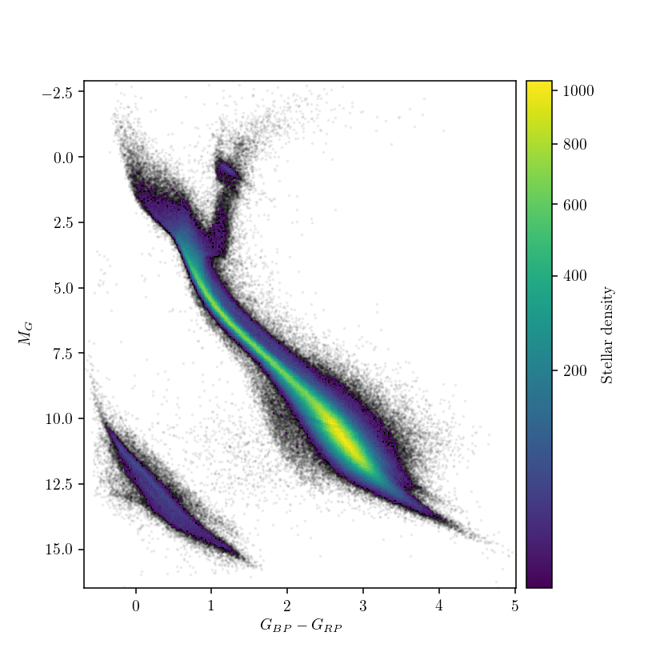

What is the saddest part about being a star? Pretty much everything about your life is determined by how much you weigh at birth. Once a star is born, its energy output is mainly governed by two forces: gravity, acting inwards, and the fusion core of the star, pushing outwards. As the delicate balance between the two sets the size and the surface temperature of the star, the color and brightness of the star are used by astronomers to determine not only how massive the star is, but also what kind of fuel it burns at its core. It is this deterministic physics that allows astronomers to efficiently study stellar populations, as they all obey similar stellar interior physics.

So what if instead of one star, we would look at one billion instead? The Hertzsprung-Russell diagram (schematically pictured above) is a powerful way to visualize stellar populations, and is probably the most famous diagram in astrophysics overall (sorry, Hubble diagram!). Simply put, it allows to classify the masses, ages, and internal compositions of stars based on their color and brightness. In 2013, European Space Agency launched the groundbreaking Gaia mission, and it’s been charting the positions, velocities and distances of over a billion stars in the Galaxy, until recently delivering two massive data releases. In addition to those, Gaia also provides photometric information for every star in its catalogue, and we can use the brightness and color information to get a powerful insight into stellar populations within Milky Way. Gaia’s latest Data Release 2 can be accessed online, so anyone can get the processed data through a number of APIs provided. The example scripts below demonstrate how to obtain Gaia DR2 and use the plot Hertzsprung-Russell diagrams, following the methodology described in recent Gaia publications.
The data can be obtained directly from the Gaia archive, but I found it much more convenient to use astroquery, an astropy-affiliated package that conveniently brings together queries for a large number of publicly available astronomy catalogues, web forms and data archives. In the case of Gaia queries, astroquery provides access to TAP+ service of the Gaia archive.
The TAP+ queries are similar to the ones in SQL, and while they are restricted to select statement only, one still has the freedom of using clauses to fine-tune a given query.
So let’s jump straight in it! Given the sheer volume of the data release, let’s write a limited query, exhaustively searching for all the stars within 200 pc from the Solar System.
As the queries could run for a while, it’s best to limit the data size transmitted, downloading only the entries with properly constrained photometry and parallaxes. After toying with the quality filters for a while I realized that the DR2 paper on H-R diagrams actually lists the query command they use for quality control in the Appendix!
def send_radial_gaia_query(query_size=1000000, distance=200, **kwargs):
"""
Sends an archive query for d < 200 pc, with additional filters taken from
Gaia Data Release 2: Observational Hertzsprung-Russell diagrams (Sect. 2.1)
Gaia Collaboration, Babusiaux et al. (2018)
(https://doi.org/10.1051/0004-6361/201832843)
NOTE: 10000000 is a maximum query size (~76 MB / column)
Additional keyword arguments are passed to TapPlus.launch_job_async method.
"""
from astroquery.utils.tap.core import TapPlus
gaia = TapPlus(url="http://gea.esac.esa.int/tap-server/tap")
job = gaia.launch_job_async("select top {}".format(query_size)+
#" lum_val, teff_val,"
#" ra, dec, parallax,"
" bp_rp, phot_g_mean_mag+5*log10(parallax)-10 as mg"
" from gaiadr2.gaia_source"
" where parallax_over_error > 10"
" and visibility_periods_used > 8"
" and phot_g_mean_flux_over_error > 50"
" and phot_bp_mean_flux_over_error > 20"
" and phot_rp_mean_flux_over_error > 20"
" and phot_bp_rp_excess_factor <"
" 1.3+0.06*power(phot_bp_mean_mag-phot_rp_mean_mag,2)"
" and phot_bp_rp_excess_factor >"
" 1.0+0.015*power(phot_bp_mean_mag-phot_rp_mean_mag,2)"
" and astrometric_chi2_al/(astrometric_n_good_obs_al-5)<"
"1.44*greatest(1,exp(-0.4*(phot_g_mean_mag-19.5)))"
+" and 1000/parallax <= {}".format(distance), **kwargs)
return job
The query above runs for a while, I think it took around half an hour to finish (not sure if due to a lousy WiFi connection or some server-side delay), but either way we better ensure we have those data saved for good:
import numpy as np
try:
gaiarec = np.recfromcsv("gaia-hrd-dr2-200pc.csv")
bp_rp, mg = gaiarec.bp_rp, gaiarec.mg
except OSError:
job = send_radial_gaia_query(dump_to_file=True, output_format="csv",
output_file="gaia-hrd-dr2-200pc.csv",
query_size=10000000)
r = job.get_results()
bp_rp = r['bp_rp'].data
mg = r['mg'].data
The default output format is a binary VOTable, but I ran into an issue where Python 3 astropy couldn’t decode the unicode characters in the saved file, so plain text csv would have to do. We aren’t plotting the entire Gaia DR2 source catalogue anyway.
Now let’s try to plot some H-R diagrams! The scatter plot is extremely dense, especially at the Main Sequence, so we need to switch from scatter plot to visualizing the density somehow after the point cloud gets saturated. I tried running KDE smoothing with scipy and scikit-learn, but convolution of so many points took ages. Instead, we’ll just use a 2D-histogram, which counts the density of data points on a rectangular grid. I originally tried to plot an interactive bokeh 2D hex tile histogram, but that proved to be extremely sluggish as well. Giving up on the “fancy” solutions, I found the classical matplotlib approach to give the best performance results:
# plot the H-R diagram for 1 M stars within 200 pc from the Sun
import matplotlib.pyplot as plt
from matplotlib import colors
plt.rc('text', usetex=True)
fig, ax = plt.subplots(figsize=(6, 6))
# only show 2D-histogram for bins with more than 10 stars in them
h = ax.hist2d(bp_rp, mg, bins=300, cmin=10, norm=colors.PowerNorm(0.5), zorder=0.5)
# fill the rest with scatter (set rasterized=True if saving as vector graphics)
ax.scatter(bp_rp, mg, alpha=0.05, s=1, color='k', zorder=0)
ax.invert_yaxis()
cb = fig.colorbar(h[3], ax=ax, pad=0.02)
ax.set_xlabel(r'$G_{BP} - G_{RP}$')
ax.set_ylabel(r'$M_G$')
cb.set_label(r"$\mathrm{Stellar~density}$")
plt.show()

The dominant majority of field stars in the Solar neighborhood lies on the main sequence, with low-mass stars (detectable thanks to Gaia’s good sensitivity to low-brightness sources) dominating the mass spectrum. At the dim red end of the diagram (bottom-right on the plot), Gaia’s sensitivity is good enough to even detect a few hundred brown dwarfs, failed stars that are not massive enough to ignite hydrogen fusion within them. So why is then the high-mass end (top-left corner) of the main sequence ends where it does? Bright and blue objects in that corner of the H-R diagram is where massive, ultra-luminous stars of O and B types are found, and indeed the Gaia data on nearby stars seems rather sparse, and truncates before the theoretical diagram shown earlier. Why is that?
- Not only massive stars are less likely to form (simply put, a big clump of interstellar gas prefers to fragment into a cluster of lower-mass stars than to form a massive star) but they also do not live long, burning out all their nuclear fuel much faster (typically in a few million years) than stars like our Sun.
- There are simply no massive stellar nurseries within two hundred parsecs (our search radius) where new high-mass stars could form.
- Gaia’s sensors are so sensitive that they actually get “blinded” by stars that are too bright! As a consequence, nearly all the stars visible on the night sky with naked eye are saturated in Gaia’s data, and are not present in the DR2 catalogue.
In addition to the main sequence stars, the white dwarf strip is clearly visible from the Gaia data. Fun fact: that’s precisely where the lonely core of the Sun will end up after its fiery death! Amazingly, even our limited data query shows that the white dwarfs are split into two populations, something that have never been observationally seen before (check out how observational H-R diagrams looked like before Gaia). While some splitting is expected for different types of white dwarf atmospheres, this astrobites post gives a great summary of why the two groups of white dwarfs might result from a different process (spoiler: WD mergers?).
In summary, the richness of the Gaia data is unprecedented even when we look at the Solar neighborhood. If we would get all the data from Gaia DR2, we would look at over a billion stars - that’s more than 1% of stars in the Galaxy! Gaia sparked a rejuvenation of stellar population studies, and plenty more interesting results will follow in years to come.
The Jupyter notebook with the code above can be found here.